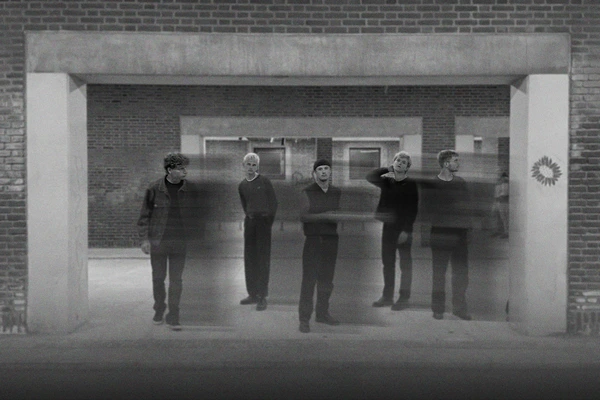

About
TELUS was formed in high school where we started playing together in the school’s rehearsal room. Since then, our music has evolved alongside our friendship. Today, we are six members, all passionate about the community and energy that music creates, and we hope that our listeners feel our presence in both our recordings and on stage.

For us, the two core elements of music are energy and emotion. Our goal is to create a space that encourage absolute immersion and powerful realeses of energy. Our sonic universe is built on an ambient soundscape, recognizable guitar melodies, and an emotive and earnest vocal delivery.
Today TELUS is a modern post-punk band located in Aarhus. Embracing the zeitgeist of a world in distress, we provide unfiltered emotion, aggression, and unapologetic truths. On stage, we manifest as a magnetic force authentic, electric, and united in our love for each other and our music.
Our vision is simple yet profound: to infuse joy and foster a sense of belonging through our music, offering sincerity and a sense of hope in a time governed by artificiality and hopelessness.